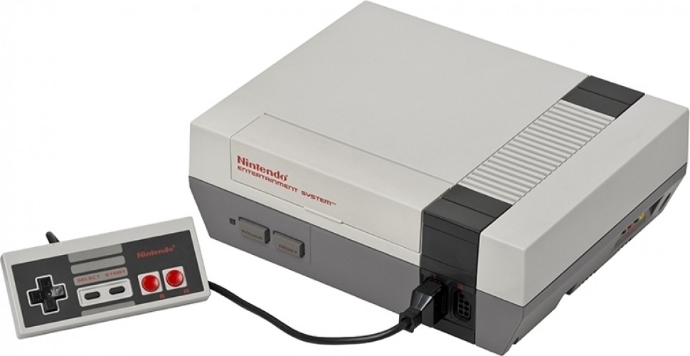
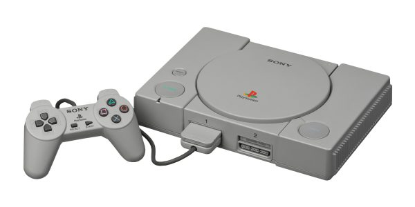

Atari 2600
Anno: 1977
La pioniera delle console domestiche, icona degli anni '80. Ha portato i videogiochi nelle case di tutto
il mondo, diventando la prima console a cartucce di grande successo e dando origine a un mercato casalingo stabile.

Nintendo NES
Anno: 1983
Ha salvato il mercato dei videogiochi dopo il crollo del 1983, ha introdotto giochi innovativi e di alta
qualità come Super Mario Bros. e The Legend of Zelda, e ha popolarizzato generi come il gioco di ruolo su console.

PlayStation
Anno: 1994
La console che ha portato il 3D nelle case di tutti. È stata un enorme successo commerciale grazie alla
sua innovativa tecnologia (come la grafica 3D), alla sua vasta libreria di giochi e a una massiccia campagna pubblicitaria che ha sfidato
i marchi storici come Nintendo e SEGA.

Nintendo 64
Anno: 1996
La rivoluzione delle avventure 3D e del multiplayer locale. Viene ricordato principalmente per aver
introdotto con successo i videogiochi nella terza dimensione e per la sua libreria di capolavori rivoluzionari che hanno definito interi
generi.

PlayStation 2
Anno: 2000
La PlayStation 2 (PS2) viene ricordata principalmente per il suo status di console più venduta di tutti i
tempi, un'ampia libreria di giochi iconici e la sua funzione di lettore DVD economico in un momento chiave per l'adozione di questa
tecnologia. Oltre 160 milioni di unità vendute in tutto il mondo

Xbox
Anno: 2001
La prima Xbox viene ricordata principalmente per aver introdotto diverse innovazioni hardware e servizi
online che hanno plasmato l'industria dei videogiochi moderna, oltre a lanciare la serie di successo di console da parte di Microsoft.